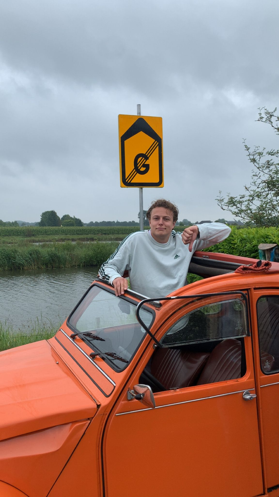

Welkom op mijn digitale reisboek. Ik probeer onderweg een beetje bij te houden waar ik uithang, wat ik meemaak en wat voor biertjes ik drink. De nieuwste update lees je hieronder 👇
Laatste locatie
📍 Nog steeds in Nederland
Laatste update: 26 mei 2025

Kleine placeholder.